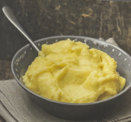

Purée de pommes de terre

Purée de pommes de terre au Thermomix, pour 4 personnes.
Préparation : 15 min
Cuisson : 50 min
Personnes : 4
Difficulté : Facile
Calories : 297 kcal par personne
Ingrédients
- 1000 g de pommes de terre farineuses, épluchées et coupées en rondelles de 0,5 cm
- 1 c. à café de sel
- 350 à 400 g de lait
- 30 g de beurre, coupé en morceaux
- 1 à 2 pincées de noix de muscade fraîchement râpée (facultatif)
Instructions
1. Insérer le fouet.
Mettre les pommes de terre, le sel et le lait dans le bol et cuire
30 à 35 minutes à 95 °C, vitesse 1, sans le gobelet doseur.
2. Ajouter le beurre et la muscade.
Insérer le gobelet doseur et mixer 40 secondes à vitesse 4.
Retirer le fouet et servir chaud.
Conseils
- La meilleure purée de pommes de terre s'obtient en utilisant des pommes de terre farineuses.
- Le temps de cuisson nécessaire dépend de la variété de pomme de terre utilisée et peut être ajusté à la texture de purée souhaitée.
- Vérifier la cuisson des pommes de terre avant de mixer. Si elles semblent encore trop fermes, prolonger la cuisson de quelques minutes.
- Si vous souhaitez une purée avec des morceaux, diminuez le temps de mixage de l'étape 2 à 15-20 secondes à vitesse 3.
Variante
Purée de pommes de terre à l'italienne :
préparer la purée en ne mettant que ½ c. à café de sel à l'étape 1
et ajouter 30 g de parmesan râpé à l'étape 2.